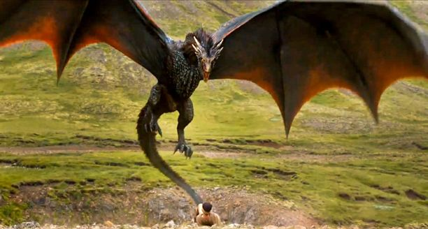

He hates going for long walks but doesn't mind a long flight or two. He's got a bit of a tmeper and only responds to "dracaris". Still haven't gotten him fire trained yet and was disappointed to find he burned a young boy while going for his morining hunt. Had to be strict with hime and sent him to the dungeon but that only made things worse. He stopped growing and became quite a handful for the feeders. I'm still deciding whether or not to let him and his sibling out but I think I'll wait for their older brother to get back before I make my choice.
Here's a few tips you might want to know about keeping Dragons:
Still learning but don't let that stop you from going out and getting youself this Lovely Lizard! Will update as I learn more!
For now, you can head to this link to learn more about dragons.